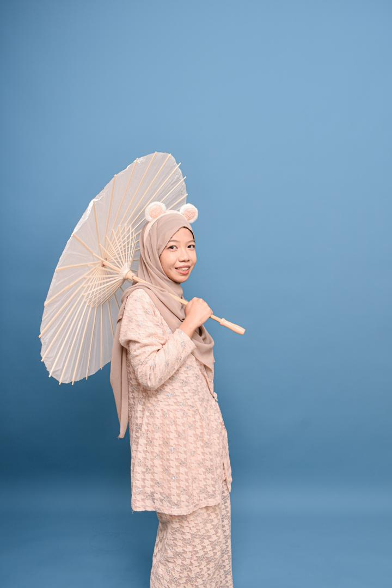

Featured Projects

Constellation Stellar AR
Augmented Reality Application | Unity & Vuforia

Mandarin Learning App
Interactive Educational Application | Adobe Animate

E-Kasih 3D Animation
Professional 3D Animation | Autodesk Maya
Bachelor of Information Technology (Media Informatics)
Universiti Sultan Zainal Abidin (UniSZA) | Expected Graduation 2026

I am a dedicated and ambitious Information Technology professional with a strong passion for building secure, scalable software solutions. With expertise in full-stack development and a specialized focus on cybersecurity, I am committed to developing applications that prioritize user data protection and system integrity. I continuously seek opportunities to enhance my technical skills and contribute meaningfully to innovative projects.
Cumulative GPA
Dean's List Awards
Completed Projects
As a Security-Focused Software Developer, I am responsible for designing, developing, and maintaining robust software applications with security as a core principle. This role combines technical excellence with a proactive approach to identifying and mitigating vulnerabilities.
HTML & CSS
PHP & Backend Development
JavaScript & Frontend Frameworks
Python
MySQL & Database Design
Cybersecurity Fundamentals
Complete industrial training to gain hands-on industry experience, strengthen programming fundamentals, and pursue CCNA certification to establish networking knowledge foundation.
Deepen cybersecurity expertise through Linux administration mastery, Security+ certification, and hands-on experience with Wireshark and Nmap for network security analysis.
Launch professional career as a Junior Software Developer, applying theoretical knowledge to real-world projects while building industry experience and professional network.
Advance to a specialized role as a Security-Focused Software Developer, leading security initiatives and contributing to organizational cybersecurity strategy.
Augmented Reality Application | Unity & Vuforia
Interactive Educational Application | Adobe Animate
Professional 3D Animation | Autodesk Maya
I aspire to join CyberSecurity Malaysia because of its distinguished reputation as a leading cybersecurity organization in Malaysia. The organization's commitment to national cybersecurity initiatives and innovation in threat prevention aligns perfectly with my professional goals. Working at CyberSecurity Malaysia would provide me with opportunities to apply my technical expertise while contributing to Malaysia's digital security infrastructure and protecting critical national assets.
I am a dedicated professional with exceptional learning agility and a strong work ethic. My solid programming fundamentals, combined with my proactive approach to problem-solving and adaptability, enable me to quickly master new technologies and methodologies. I am deeply committed to continuous professional development and staying current with industry trends, ensuring I deliver high-quality solutions that meet evolving business needs.